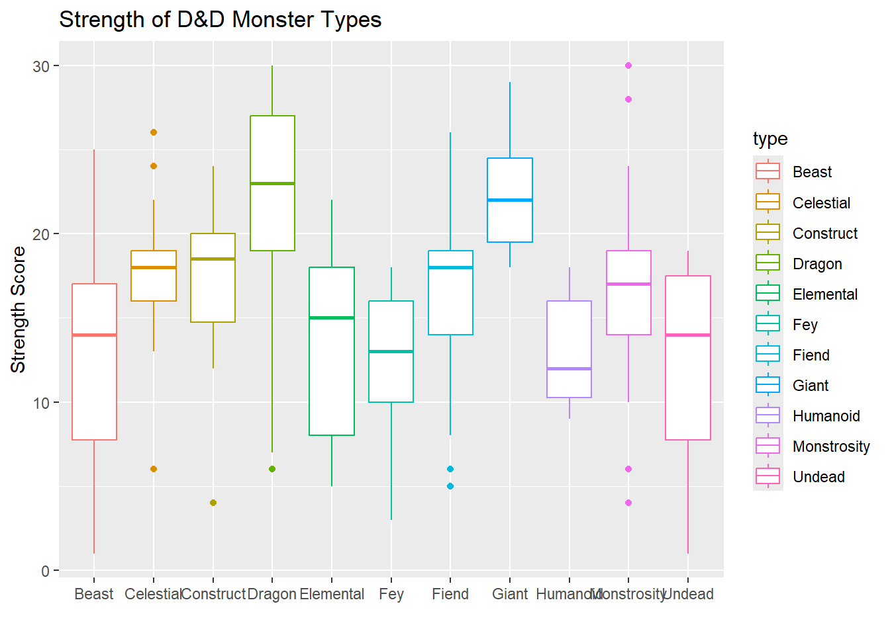
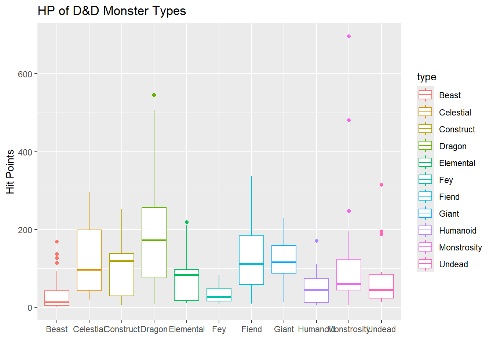
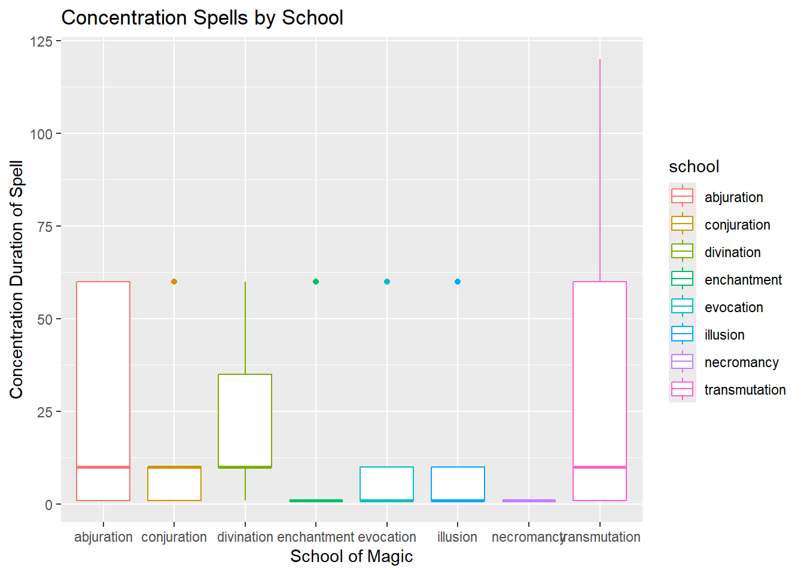

This is a plot I made comparing the different types of D&D monsters with their total hit points and their strength score / modifier. I enjoy acting as GM for my friends, especially for off-season bonding with my choir, but the diversity of monsters I can throw at my players is sometimes overwhelming. This way I can get a sense for what type of monster I want depending on if I want them to hit hard, be difficult to kill, or both.
First, let’s look at what types of monsters are most common in D&D.
Unsurprisingly, Beast is the most common type of D&D monster by a wide margin. It’s sort of the catch-all monster category. I didn’t expect Dragon to be so close behind, but given there’s a whole separate dragon for like every color (or metal, or gem…) it’s not all that surprising.
Personally, I’m less interested in the strength and HP scores of some of the smaller types. Any of the types that have under 10 entries, I am going to either lump in with another type that feels right, or filter out. For example, I’m fine lumping in the single Swarm of Tiny Undead in with the rest of the Undead, and I don’t really need the Aberrations in there. If I want a Beholder, it’s not because it has 180 HP. It’s because I want a Beholder. Then, I want to compare the types across HP and Strength, which I though would be easiest to visualize with box plots.
Show the code
common_monsters <- monsters |>left_join(num_monsters, by ="type") |>#sticking the counts column in theremutate(type =ifelse(type =="Swarm of Tiny Beasts"| type =="Beast", "Beast", ifelse(type =="Swarm of Tiny Undead"| type =="Undead", "Undead", #lumping in the swarms type ))) |>filter(num_monster >=10) #filtering out small types
Show the code
ggplot(common_monsters, aes(x = type, y = str, color = type)) +geom_boxplot() +labs(x ="",y ="Strength Score",title ="Strength of D&D Monster Types", )

The nice thing about the strength scores in D&D is that there’s a hard cutoff at 30. HP doesn’t have those limitations.
Show the code
ggplot(common_monsters, aes(x = type, y = hp_number, color = type)) +geom_boxplot() +labs(x ="",y ="Hit Points",title ="HP of D&D Monster Types", )

Most monster types sit comfortably below 200 HP, with Dragons being the only ones who consistently go above. And that point way out there by 700 is none other than the Tarrasque, of course.
Next I wanted to look at which schools of magic favored distance or melee spells. This was made complicated by the spell range being stored as character strings (eg “30 feet” or “Touch”) and additionally complicated by such range types as “Unlimited” or “500 miles”.Unfortunately, if I kept in the massive distances, the plot doesn’t give a great representation at how different 300 feet is from 500 feet versus 5 feet from 10 feet.
So, for anything over one mile, I decided to set their range to 600 feet, as combat spells usually have the same range as a longbow unless buffed. I left out “Special” because it applies to exactly one spell, Dream, and is specific to planes of existence.
spells |>mutate(range_num =case_when(str_detect(range, "Self") ~0,str_detect(range, "Touch") ~5,str_detect(range, "Sight|mile|miles|Unlimited") ~600, str_detect(range, "feet") ~as.numeric(str_extract(range, "\\d+")) ) ) |>ggplot(aes(x = school, y = range_num, color = school)) +geom_boxplot() +labs(x ="School of Magic",y ="Range of Spell",title ="D&D Spell Range by School", )
Neat! Seems like Conjuration, Illusion, and Evocation like longer-range spells, while Abjuration and Necromancy are the only schools with no spells that can go further than 150 feet.
Likewise I did the same with concentration-based spells, narrowing it down to spells with concentration of a max of 2 hours.
Show the code
# spell duration : # [1] "Instantaneous" "8 hours" "Concentration, up to 1 hour" # [4] "24 hours" "Concentration, up to 1 minute" "10 days" # [7] "Until dispelled" "Concentration, up to 10 minutes" "1 hour" # [10] "1 minute" "7 days" "Concentration, up to 8 hours" # [13] "Special" "Up to 8 hours" "Concentration, up to 1 day" # [16] "10 minutes" "1 day" "30 days"# [19] "Until dispelled or triggered" "1 round" "Concentration, up to 2 hours" # [22] "Up to 1 hour" "Concentration up to 10 minutes" "Up to 1 minute" spells |>mutate(con_time =case_when(str_detect(duration, "(?i)(?=.*minutes?)(?=.*concentration)") ~as.numeric(str_extract(duration, "\\d+")), str_detect(duration, "(?i)(?=.*hours?)(?=.*concentration)") ~as.numeric(str_extract(duration, "\\d+")) *60 ) ) |>filter(con_time <200) |>ggplot(aes(x = school, y = con_time, color = school)) +geom_boxplot() +labs(x ="School of Magic",y ="Concentration Duration of Spell",title ="Concentration Spells by School", )

I guess necromancers have no patience to concentrate that long!
Dungeons & Dragons | The Official Home of D&D. (n.d.). D&D Beyond. Retrieved December 10, 2025, from https://www.dndbeyond.com